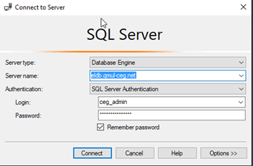
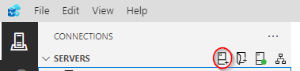
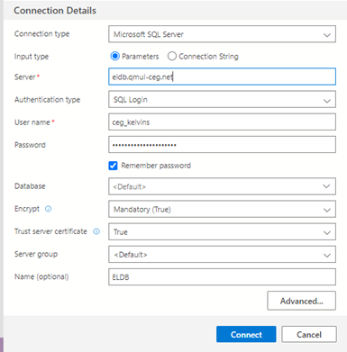
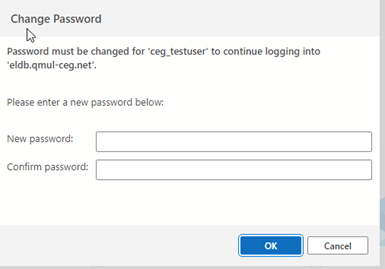
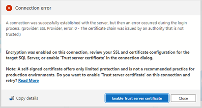
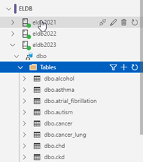
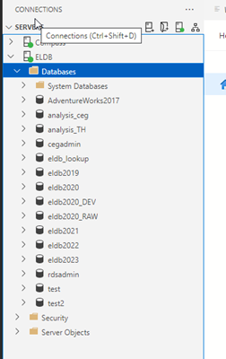
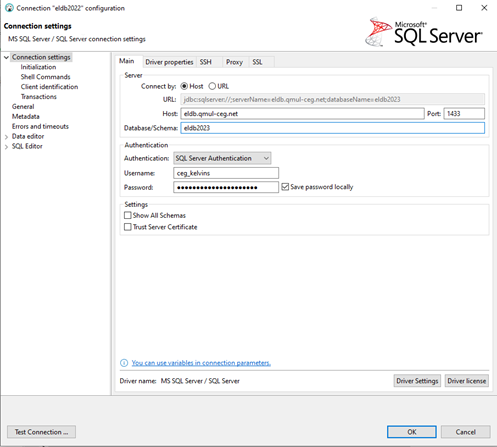

SQL Clients
The ELDB Server can be accessed directly using any SQL client software with capabilities for connect to Microsoft SQL Server.
SQL Server Management Studio (SSMS)
SQL Server Management Studio (SSMS) is the SQL client provided by Microsoft. It can be downloaded for free from Microsoft.
All required drivers are installed with the application. A DSN is NOT required.
Open SSMS and select Connect Object Explorer… from either the File menu or the icon at the top of the Object Explorer panel. A login window will appear. Enter the ELDB access credentials that you have been given and click Connect.

Azure Data Studio (ADS)
Azure Data Studio is an open-source SQL client developed by Microsoft but available for all platforms (Windows, Mac, Linux). It has a greater focus on data querying and a more modern interface than SSMS. It is available for download from Microsoft. It is also automatically installed with SQL Server Management Studio.
All required drivers are installed with the application. A DSN is NOT required.
Open SSMS and select the top icon, Connections, from the lefthand sidebar. This will open the Connections panel. At the top of this panel, click on the left-hand icon (circled in red below) to create a New Connection.

The Connection panel will open on the right-hand side with the Connection Details section at the bottom.

- Change the Authentication type to ‘SQL Login’ and enter the ELDB credentials that you have been given in the Server, User name and _Password* sections. Tick Remember password.
- Database can be set to a specific database, such as ‘eldb2024’ – this will set the connection to that specific database. Alternatively, Database can be left as ‘Default’ – this will set the connection to ELDB server, allowing you to see all the databases on the server. You will only be able to access, however, the databases to which you have been given the relevant permissions. See below for screenshots.
- Change Trust server certificate to ‘True’.
- Provide a suitable name for the connection in the Name(optional) section.
- Click Connect
If your password needs changing, the Change Password box will appear when you press Connect or when you select the Database. Choose a new password and OK.

If you get a 'Connection error' warning, click Enable trust server certificate. This will set the Trust server certificate section in the Connection Details to ‘True’.

As explained above, connections using Default will display all the databases on the server. Connections made to a specific database will show just that database. You can set up multiple connections, of either type, and group them in the Connections panel. Below, each ELDB database has a separate connection under a ‘ELDB’ group.

Whereas a 'Default' connection displays all the available databases on the server. In each case, the database expands to a list of schemas and system folders. The database tables can be found under the dbo schema.

ADS is a very feature rich application with specialised utilities available for install via Extensions module. The Notebooks module also allows for executable SQL scripts embedded within text documents. There are many resources available online that provide an overview of ADS and its utilities. Microsoft Learn provides a good starting point, with tutorials and how-to-guides.
DBeaver and Other SQL Clients
DBeaver is a SQL client that can connect to many different types of database. The free Community version is available from https://dbeaver.io and a portable version, that does not require an administrative login, can be downloaded from https://portapps.io/app/dbeaver-portable/. Other SQL clients can be used and will follow a similar connection process.
Open a connection wizard by clicking on the plug icon in the upper left corner of the application window or go to Database >> New Database Connection. The database selection window will open with a long list of database connections. Select SQL Server and click Next.
Enter your ELDB access credentials, including your newly created password. Click Finish.

DBeaver will assess the connection requirements and may request that a JDBC driver is installed. Click OK and the driver will be automatically downloaded and installed.